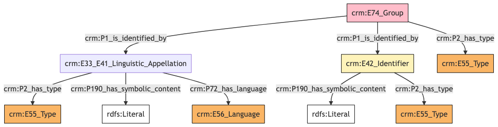
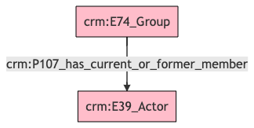
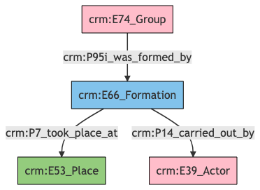
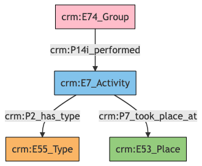
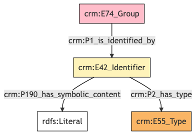
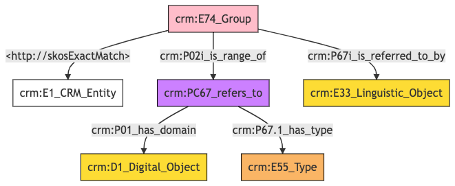

Group
Author: Denitsa Nenova, George Bruseker
Version: 1.0
The Group reference data model provides a list of standard descriptors (fields) that are typically present in the description of a Group or institution in cultural heritage data systems. The intention of this reference model is to provide a consolidated, high-level formal structure comprising the most commonly reused descriptors for a Group.
| Name | URI | |
|---|---|---|
| Root Ontology Node | E74 Group | https://cidoc-crm.org/Entity/E74-Group/version-7.1.1 |
| Type Differentiator | N/A | N/A |
Model Sections Description
| Information Category | Information Collections | Description |
|---|---|---|
| Names and Classifications | Names/Alternative Names/Identifiers/Type | The researcher can document various names and classification regarding the Group. |
| Existence | Formation | The researcher can document the events related to the formation of the Group. |
| Parthood | Members | The researcher can document members of the Group. |
| Activities | Professional Activities | The researcher can document information about the the professional activities of the Group. |
| Location | Contact Details | The researcher can document relevant addresses and other contact information associated with the Group. |
| Description | Description | The researcher can document various free-text descriptions of the Group. |
| Documentation | Digital Resource | The researcher can document various weblinks and images related to the Group. |
Group Names and Classifications
The attribution of names and types to things, including Groups, is a basic human activity. The disambiguation of Groups is aided by the understanding of the various names and identifiers that have been given to a Group at different moments in time. Moreover, classifications such as Group type and legal status can help in identifying and studying Groups over time.
| Filed ID | Name | Description | Data Type | CRM Path |
|---|---|---|---|---|
| LAF.6 | Organization Name | This field is used to record the string value of the name attributed to the documented Group. | String | ->p1->E33_E41[4_1]->p190->rdf:literal |
| LAF.5 | Name Type | This field is used to record the type of the name attributed to the documented Group. | Concept | ->p1->E33_41[4_1]->p2->E55[5_1] |
| LAF.7 | Name Language | This field is used to record the language of the name attributed to the documented Group. | Concept | ->p1->E33_E41[4_1]->p72->E56[7_1] |
| LAF.9 | Organization ID Type | This field is used to record the type of the identifier attributed to the documented Group. | Concept | ->p1->E42[8_1]->p2->E55[9_1] |
| LAF.10 | Organization ID | This field is used to record an identifier attributed to the documented Group. | String | ->p1->E42[8_1]->p190->rdf:literal |
| LAF.11 | Organization Type | This field is used to record the formal type of the documented Group. | Concept | ->p2->E55[11_1] |
- Group Names and Classifications Ontology Graph

- Group Names and Classifications RDF
@prefix crm: <http://www.cidoc-crm.org/cidoc-crm/> .
@prefix rdfs: <http://www.w3.org/2000/01/rdf-schema#> .
<https://pma.us/models/group/E74> a crm:E74_Group ;
crm:P1_is_identified_by <https://linked.art/example/conceptual_object/4_1>,
<https://linked.art/example/conceptual_object/8_1> ;
crm:P2_has_type <https://linked.art/example/type/11_1> .
<http://vocab.getty.edu/page/aat/300404670> a crm:E55_Type ;
rdfs:label "preferred terms" .
<https://linked.art/example/conceptual_object/4_1> a crm:E33_E41_Linguistic_Appellation ;
crm:P190_has_symbolic_content "Name_string_value" ;
crm:P2_has_type <http://vocab.getty.edu/page/aat/300404670> ;
crm:P72_has_language <https://linked.art/example/type/7_1> .
<https://linked.art/example/conceptual_object/8_1> a crm:E42_Identifier ;
crm:P190_has_symbolic_content "Identifier_value_content" ;
crm:P2_has_type <https://linked.art/example/identifier/9_1> .
<https://linked.art/example/identifier/9_1> a crm:E55_Type .
<https://linked.art/example/type/11_1> a crm:E55_Type .
<https://linked.art/example/type/7_1> a crm:E56_Language .
- Group Names and Classifications JSON-LD
{
"@context": "https://linked.art/ns/v1/linked-art.json",
"@graph": [
{
"id": "https://linked.art/example/identifier/9_1",
"type": "Type"
},
{
"_label": "preferred terms",
"id": "http://vocab.getty.edu/page/aat/300404670",
"type": "Type"
},
{
"classified_as": [
"https://linked.art/example/identifier/9_1"
],
"content": "Identifier_value_content",
"id": "https://linked.art/example/conceptual_object/8_1",
"type": "Identifier"
},
{
"classified_as": [
"http://vocab.getty.edu/page/aat/300404670"
],
"content": "Name_string_value",
"id": "https://linked.art/example/conceptual_object/4_1",
"language": [
"https://linked.art/example/type/7_1"
],
"type": "Name"
},
{
"id": "https://linked.art/example/type/11_1",
"type": "Type"
},
{
"classified_as": [
"https://linked.art/example/type/11_1"
],
"id": "https://pma.us/models/group/E74",
"identified_by": [
"https://linked.art/example/conceptual_object/4_1",
"https://linked.art/example/conceptual_object/8_1"
],
"type": "Group"
},
{
"id": "https://linked.art/example/type/7_1",
"type": "Language"
}
]
}
Group Parthood
Groups often exist in complex internal structuration with relations of subsumption towards sub-parts of the Group. This information category gathers together the basic descriptors typically deployed to this end.
| Filed ID | Name | Description | Data Type | CRM Path |
|---|---|---|---|---|
| LAF.18 | Members | This field is used to link the documented Group to an instance of person or Group which is a member of it. | Reference Model [Person] | ->p107->E21[18_1] |
- Group Parthood Ontology Graph

- Group Parthood RDF
@prefix crm: <http://www.cidoc-crm.org/cidoc-crm/> .
<https://pma.us/models/group/E74> a crm:E74_Group ;
crm:P107_has_current_or_former_member <https://linked.art/example/actor/18_1> .
<https://linked.art/example/actor/18_1> a crm:E39_Actor .
- Group Parthood JSON-LD
{
"@context": "https://linked.art/ns/v1/linked-art.json",
"@graph": [
{
"crm:P107_has_current_or_former_member": {
"id": "https://linked.art/example/actor/18_1"
},
"id": "https://pma.us/models/group/E74",
"type": "Group"
},
{
"id": "https://linked.art/example/actor/18_1",
"type": "Actor"
}
]
}
Group Existence
Of essential importance in identifying and tracking Groups is to know when they came into existence as such. For this reason, we have clustered descriptors relevant to such information into a common ‘existence’ category tracking the formation of a Group. These are described in the table below.
| Filed ID | Name | Description | Data Type | CRM Path |
|---|---|---|---|---|
| LAF.142 | Organization Formed By | This field is used to link the documented group formation activity to an actor responsible for carrying it out. | Reference Model [Person/Group] | ->P95i->E66[139_1]->P14->E39[142_1] |
| LAF.139 | Formation Place | This field is used to link the documented group formation activity to a location at which it was carried out. | Reference Model [Place] | ->P95i->E66[139_1]->P7->E53[139_2] |
- Group Existence Ontology Graph

- Group Existence RDF
@prefix crm: <http://www.cidoc-crm.org/cidoc-crm/> .
<https://pma.us/models/group/E74> a crm:E74_Group ;
crm:P95i_was_formed_by <https://linked.art/example/event/139_1> .
<https://linked.art/example/actor/142_1> a crm:E39_Actor .
<https://linked.art/example/event/139_1> a crm:E66_Formation ;
crm:P14_carried_out_by <https://linked.art/example/actor/142_1> ;
crm:P7_took_place_at <https://linked.art/example/place/139_2> .
<https://linked.art/example/place/139_2> a crm:E53_Place .
- Group Existence JSON-LD
{
"@context": "https://linked.art/ns/v1/linked-art.json",
"@graph": [
{
"formed_by": "https://linked.art/example/event/139_1",
"id": "https://pma.us/models/group/E74",
"type": "Group"
},
{
"carried_out_by": [
"https://linked.art/example/actor/142_1"
],
"id": "https://linked.art/example/event/139_1",
"took_place_at": [
"https://linked.art/example/place/139_2"
],
"type": "Formation"
},
{
"id": "https://linked.art/example/place/139_2",
"type": "Place"
},
{
"id": "https://linked.art/example/actor/142_1",
"type": "Actor"
}
]
}
Group Activities
This category brings together documentary evidence with regards to the main professional activities subject to the documented Group.
| Filed ID | Name | Description | Data Type | CRM Path |
|---|---|---|---|---|
| LAF.134 | Main Activity | This field is used to record the formal type of the documented Group's professional activity. | Concept | ->P14i->E7[126_1]->P2->E55[134_1] |
| LAF.126 | Current Location | This field is used to link the documented Group's professional activity to a location at which it was carried out. | Reference Model [Place] | ->P14i->E7[126_1]->P7->E53[126_2] |
- Group Activities Ontology Graph

- Group Activities RDF
@prefix crm: <http://www.cidoc-crm.org/cidoc-crm/> .
<https://pma.us/models/group/E74> a crm:E74_Group ;
crm:P14i_performed <https://linked.art/example/event/126_1> .
<https://linked.art/example/event/126_1> a crm:E7_Activity ;
crm:P2_has_type <https://linked.art/example/type/134_1> ;
crm:P7_took_place_at <https://linked.art/example/place/126_2> .
<https://linked.art/example/place/126_2> a crm:E53_Place .
<https://linked.art/example/type/134_1> a crm:E55_Type .
### - Group Activities JSON-LD
{
"@context": "https://linked.art/ns/v1/linked-art.json",
"@graph": [
{
"id": "https://linked.art/example/place/126_2",
"type": "Place"
},
{
"carried_out": [
"https://linked.art/example/event/126_1"
],
"id": "https://pma.us/models/group/E74",
"type": "Group"
},
{
"classified_as": [
"https://linked.art/example/type/134_1"
],
"id": "https://linked.art/example/event/126_1",
"took_place_at": [
"https://linked.art/example/place/126_2"
],
"type": "Activity"
},
{
"id": "https://linked.art/example/type/134_1",
"type": "Type"
}
]
}
Group Location
The documentation of location aids in understanding where a Group is seated as well as in understanding how they are dispersed geographically. This information category gathers together relevant descriptors for this task.
| Filed ID | Name | Description | Data Type | CRM Path |
|---|---|---|---|---|
| LAF.172 | Current Address | This field is used to link the documented Group to a place at which they have been resident. | Reference Model [Place] | ->P74->E53[172_1] |
| LAF.169 | Contact Point Type | This field is used to record the type of the contact Point attributed to the documented Group. | Concept | ->P1->E42[168_1]->P2->E55[169_1] |
| LAF.170 | Contact Details | This field is used to record a contact Point attributed to the documented Group. | String | ->P1->E42[168_1]->P190->rdf:literal |
- Group Location Ontology Graph

- Group Location RDF
@prefix crm: <http://www.cidoc-crm.org/cidoc-crm/> .
<https://pma.us/models/group/E74> a crm:E74_Group ;
crm:P1_is_identified_by <https://linked.art/example/conceptual_object/168_1> .
<https://linked.art/example/conceptual_object/168_1> a crm:E42_Identifier ;
crm:P190_has_symbolic_content "Identifier_value_content" ;
crm:P2_has_type <https://linked.art/example/type/169_1> .
<https://linked.art/example/type/169_1> a crm:E55_Type .
- Group Location JSON-LD
{
"@context": "https://linked.art/ns/v1/linked-art.json",
"@graph": [
{
"id": "https://pma.us/models/group/E74",
"identified_by": [
"https://linked.art/example/conceptual_object/168_1"
],
"type": "Group"
},
{
"id": "https://linked.art/example/type/169_1",
"type": "Type"
},
{
"classified_as": [
"https://linked.art/example/type/169_1"
],
"content": "Identifier_value_content",
"id": "https://linked.art/example/conceptual_object/168_1",
"type": "Identifier"
}
]
}
Group Documentation
This information category unites referential information about the documented Group.
| Filed ID | Name | Description | Data Type | CRM Path |
|---|---|---|---|---|
| LAF.37 | Weblink | This field is used to document a URI which is meant to indicate an equivalence between the documented Group and a resolvable, structured reference resource that stands as a document for this self same entity. | Class | ->skos:ExactMatch->E1[37_1] |
| LAF.173 | Reference | This field is used to link the documented Group to an instance of textual work in which it is documented or mentioned. | Reference Model [Textual Work] | ->P67i->E33[173_1] |
| PMAF.83 | Digital Object | This field is used to link to an instance of digital resource which serves as a digital reference document for the documented Group. | Reference Model [Digital Object] | ->P02i->PC67[A83_1]->P01->D1[A83_2] |
| PMAF.84 | Digital Object Type | This field is used to link to a type record which indicates the kind of reference supported by the digital resource that serves as a reference for the documented Group. | Concept | ->P02i->PC67[A83_1]->P67.1->E55[A84_1] |
- Group Documentation Ontology Graph

- Group Documentation RDF
@prefix crm: <http://www.cidoc-crm.org/cidoc-crm/> .
@prefix skos: <http://skos> .
<https://pma.us/models/group/E74> a crm:E74_Group ;
skos:ExactMatch <https://linked.art/example/entity/37_1> ;
crm:P02i_is_range_of <https://linked.art/example/reified_property/A83_1> ;
crm:P67i_is_referred_to_by <https://linked.art/example/conceptual_object/173_1> .
<https://linked.art/example/conceptual_object/173_1> a crm:E33_Linguistic_Object .
<https://linked.art/example/conceptual_object/A83_2> a crm:D1_Digital_Object .
<https://linked.art/example/conceptual_object/A84_1> a crm:E55_Type .
<https://linked.art/example/entity/37_1> a crm:E1_CRM_Entity .
<https://linked.art/example/reified_property/A83_1> a crm:PC67_refers_to ;
crm:P01_has_domain <https://linked.art/example/conceptual_object/A83_2> ;
crm:P67.1_has_type <https://linked.art/example/conceptual_object/A84_1> .
- Group Documentation JSON-LD
{
"@context": "https://linked.art/ns/v1/linked-art.json",
"@graph": [
{
"id": "https://linked.art/example/conceptual_object/A83_2",
"type": "crm:D1_Digital_Object"
},
{
"crm:P01_has_domain": {
"id": "https://linked.art/example/conceptual_object/A83_2"
},
"crm:P67.1_has_type": {
"id": "https://linked.art/example/conceptual_object/A84_1"
},
"id": "https://linked.art/example/reified_property/A83_1",
"type": "crm:PC67_refers_to"
},
{
"id": "https://linked.art/example/conceptual_object/A84_1",
"type": "Type"
},
{
"crm:P02i_is_range_of": {
"id": "https://linked.art/example/reified_property/A83_1"
},
"http://skosExactMatch": {
"id": "https://linked.art/example/entity/37_1"
},
"id": "https://pma.us/models/group/E74",
"referred_to_by": [
"https://linked.art/example/conceptual_object/173_1"
],
"type": "Group"
},
{
"id": "https://linked.art/example/entity/37_1",
"type": "CRMEntity"
},
{
"id": "https://linked.art/example/conceptual_object/173_1",
"type": "LinguisticObject"
}
]
}